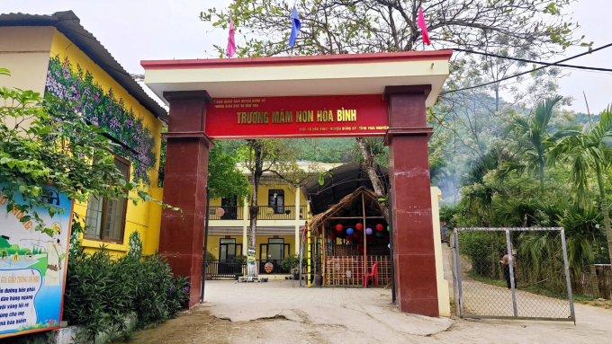

Mỹ – Iran đạt thỏa thuận về ngừng bắn, mở cửa eo biển Hormuz trong hai tuần
Mỹ và Iran đồng ý ngừng bắn trong hai tuần, Tehran sẽ cho phép tàu thuyền đi qua eo biển Hormuz trong thời gian này "với sự điều phối từ lực lượng vũ trăng".
THÁI NGUYÊNHiệu trưởng Mầm non Hòa Bình bị đình chỉ 15 ngày để điều tra, sau khi hơn 100 phụ huynh cho con nghỉ học vì phát hiện thịt bán trú có "màu lạ", dương tính khuẩn Ecoli và tả lợn. Ông Hà Quang Trọng, Chủ tịch UBND xã Văn Lăng, sáng 8/4 cho biết quyết định đình chỉ với hiệu trưởng có hiệu lực ngay. Theo ông, cơ quan chức năng phát hiện thịt dùng nấu ăn bán trú ở trường Mầm non Hòa Bình dương tính với virus tả lợn châu Phi, khuẩn Ecoli, trùng khớp với kết quả xét nghiệm tự phát của phụ huynh.
"Xã đã chỉ đạo trường đổi nhà cung cấp thực phẩm uy tín, rà soát quy trình bán trú, có phụ huynh phối hợp giám sát", ông Trọng nói. Sự việc bắt đầu hôm 25/3, sau khi một phụ huynh phát hiện thịt dùng để nấu ăn bán trú có mùi "bất thường" và "phần mỡ có màu vàng".
Các phụ huynh gặp hiệu trưởng để phản ánh, song ban giám hiệu khẳng định thịt không có vấn đề gì. Hiệu trưởng, hiệu phó và một số nhân viên nhà bếp còn rang thịt và nếm trước mặt phụ huynh, nhằm khẳng định chất lượng. Vì không yên tâm, phụ huynh đã yêu cầu dùng nguyên liệu khác cho bữa ăn, đồng thời góp tiền mang mẫu thịt đi xét nghiệm. Sau một ngày, họ nhận kết quả mẫu thịt dương tính với vi khuẩn Ecoli và virus dịch tả lợn châu Phi.
Hơn 100 phụ huynh sau đó đồng loạt cho con nghỉ học. Số trẻ đến trường hàng ngày chỉ khoảng 20-30 em trên 150. Theo ông Trọng, sức khỏe của học sinh và giáo viên trường Mầm non Hòa Bình hiện bình thường. Khoảng 60-70 trẻ đã đi học lại, tương đương 50% tổng số toàn trường.
Trong buổi làm việc với xã sáng nay, ông Dương Văn Lượng, Phó chủ tịch tỉnh Thái Nguyên, đề nghị công an khẩn trương điều tra, làm rõ nguyên nhân và nguồn gốc thực phẩm gây nhiễm khuẩn và trách nhiệm các bên. Cùng đó, địa phương kiểm tra dấu hiệu vi phạm của ban giám hiệu trường Hòa Bình. Ông Lượng nhấn mạnh an toàn thực phẩm gắn trực tiếp với sức khỏe người dân, đặc biệt là trẻ em, nên phải đảm bảo an toàn, kiểm soát chặt nguồn cung và quy trình chọn nhà thầu

Theo thông tin trên website, trường Mầm non Hòa Bình được thành lập năm 2002, là trường bán công, tới năm 2010 chuyển thành trường công lập. Các phụ huynh cho biết tiền ăn của trẻ khoảng 20.000 đồng một ngày.

Mỹ và Iran đồng ý ngừng bắn trong hai tuần, Tehran sẽ cho phép tàu thuyền đi qua eo biển Hormuz trong thời gian này "với sự điều phối từ lực lượng vũ trăng".

Người dân Iran tập trung trên đường phố Tehran, vậy có và hô khẩu hiệu sau khi lệnh ngừng bắn hai tuần với Mỹ được công bố.

Nằm ở bộ nam eo biển Hormuz, cách Iran gần 34 km, bán đảo Musandam của Oman đang chứng kiến những hệ lụy về kinh tế và đời sống khi xung đột bùng phát.